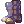

Sanoshi's WoE/BG Minstrel Guide
| This guide has not been updated in a while. | ||
|---|---|---|
| Information on this page may be obsolete and outdated. Please refer to the author for information on future updates. |
||
| Minstrel | |||||||||||||||||||
|---|---|---|---|---|---|---|---|---|---|---|---|---|---|---|---|---|---|---|---|
| Job Base: | Bard, Clown | ||||||||||||||||||
| Written By: | Sanoshi | ||||||||||||||||||
| |||||||||||||||||||
{kind=link}
Overview
The Minstrel is a support class focused on buffing your teammates with AoE songs while inflicting crippling debuffs to your enemies. This guide focuses primarily on gameplay in a WoE/BG setting. If you do not know anything about War of Emperium and/or Battlegrounds, please read up on those topics before continuing reading this guide as I expect you to at least somewhat understand these game modes.
Pros:
- Bragi
Cons:
- Bragi
Stats
For this section, I will tell you the what each stat does and let you decide the values you should invest.
If you do not know what some Status Effects do, look here as iROwiki has a nice description of each status. However, some of the information in iROwiki about preventing certain statuses is not accurate to NovaRO. My guide here tells you the correct stats that prevent statuses.
- STR - Strength is used primarily for increasing ATK and Weight Limit.
- Reduces the duration of being stuck inside
 Extreme Vacuum.
Extreme Vacuum. - Indirectly decreases the chance of being afflicted by
 Masquerade because it's success chance is based on the target's Total Weight Limit - Current Weight Limit.
Masquerade because it's success chance is based on the target's Total Weight Limit - Current Weight Limit.
- Reduces the duration of being stuck inside
- AGI - Agility is primarily used for increasing Attack Speed and Flee.
- Attack Speed is important because it affects Animation Delay, which is basically the amount of time it takes your character sprite to stop moving after they finished casting a Skill, and in turn, letting you use another skill.
- Decreases chance of being afflicted by Masquerade Skills.
- Decreases chance of being immobilized by
 Warg Bite.
Warg Bite. - Decreases chance of being afflicted by Sleep and Bleeding.
NOTE: You should have high AGI to increase the effectiveness of Assassin Cross of Sunset.
- VIT - Vitality is primarily used for increasing Max Health.
- Decreases chance of being afflicted by Poison (not GX poisons), Stun, and Blind.
- Reduces Freezing(Not Frozen) duration.
- Decreases chance of being afflicted by Mandragora Howling
- Reduces
 Crystallization duration.
Crystallization duration.
NOTE: You should have high VIT to increase the effectiveness of Apple of Idun.
- INT - Intelligence is primarily used for increasing Max SP.
- Decreases chance of being afflicted by Silence .
- Decreases chance of being afflicted by Oblivion Curse .
- Reduces
 Marsh of Abyss duration.
Marsh of Abyss duration. - Reduces Deep Sleep duration.
- Reduces Arrullo success chance.
- Reduces Variable Cast Time.
NOTE: You will need to run a build with 150 INT total for 0 Cast Delay on your Poem of Bragi.
- DEX - Dexterity is used primarily for increasing Accuracy.
- Reduces chance to be Stripped.
- Reduces Freezing duration.
- Reduces
 Stasis duration.
Stasis duration. - Reduces Variable Cast Time.
- LUK - Luck is primarily used for increasing CRIT chance, Perfect Dodge, Accuracy, and ATK.
- Decreases chance of being afflicted by Curse.
- Reduces Marsh of Abyss duration.
- Decreases chance of being afflicted by Masquerade.
- Note that 3 points in LUK increases ATK and Hit by 1 where 1 point in STR or DEX increases ATK and Hit by 1 respectively.
Equipment
Let me start by saying: You do not need every single item listed here. The items listed help you in certain match ups. However, they are not completely mandatory to success. Also, don't carry all your equipment with you at once. Grab what you need from storage and put in whatever you don't.
The equipment I display focus mainly around Elements. This is because a key mechanic in Ragnarok Online is playing around Elements. The Elements Table can be found here. Some notes to take from this table is that using an Elemental Armor puts you at Level 1 of that Element. This means you will take less damage from the corresponding Element as well as take more damage from its opposing Element. Another thing to note is that since you are using an Elemental Armor, you are no longer Neutral Element; this means that Ghost property attacks will do full damage to you.
As a minstrel, your job is to stay alive and support your team. These gears focus on maximizing your survivability and/or ability to support your team.
Headgears
| Item | Type | Way to obtain | Notes |
|---|---|---|---|
 Feather Beret [0] Feather Beret [0]
|
Upper | Headgear Quest | Gives 10% Demihuman resistance. |
 Piamette Brown Ears [1] Piamette Brown Ears [1]
|
Upper | Siege Token Shop | Gives 5% Demihuman resistance and 10% HP. |
| Lyrica Hat [1] | Upper | Cash Shop | Gives 50% Fixed Cast Time Reduction (does not stack with Sacrament) |
 Blush of Groom [0] Blush of Groom [0]
|
Middle | Cash Shop | Gives 3% Demihuman resistance. |
 Challenger's Blindfold [0] Challenger's Blindfold [0]
|
Middle | General Sotaro Quest | Gives 5% Demihuman resistance. |
 Monocle [1] Monocle [1]
|
Middle | Drop | Any Middle Headgear with a slot would do (get Spiritual Auger found in Cash Shop and apply it to applicable Middle Headgears). However this is the easiest and cheapest to obtain. |
 Poker Card in Mouth [0] Poker Card in Mouth [0]
|
Lower | Cash Shop | Gives 2% Demihuman resistance. |
 Gentleman's Pipe [0] Gentleman's Pipe [0]
|
Lower | Cash Shop | Gives 2% Demihuman resistance. |
 Handkerchief in Mouth [0] Handkerchief in Mouth [0]
|
Lower | General Sotaro Quest | Gives 3% Demihuman resistance. |
| Card | Drop | Gives 10% Water Resistance. | |
| Card | Drop | Gives 10% Fire Resistance. | |
| Card | Drop | Gives 15% Earth Resistance (Also gives Immunity to Confusion status). | |
| Card | Drop | Gives 10% Wind Resistance. | |
| Card | Drop | Gives 15% Shadow Resistance. |
Armor
| Item | Type | Way to obtain | Notes |
|---|---|---|---|
| WoE Suit [1] | Armor | Guild Dungeon Investment System | Simply the best Armor for reduction, there is no current alternative to using another body armor. The 15% Ranged Resist at +6 is invaluable as well as the 25% total Demihuman reduction when using the full WoE Set. If a +9 is out of your budget, a +6 should suffice for a long time. |
| Card | Drop | Changes Armor to Undead property for Immunity to Frozen and Stone Curse statuses and Immunity to Poison property damage.
Note: you can be killed from a Priest's Resurrection and/or Turn Undead skill. | |
| Card | Drop | Immunity to Frozen Status as well as additional 5% Water Resistance. Know that you don't change elements with Marc Card so Ghost Property Attacks will not do full damage on you. | |
| Card | Drop | Changes Armor to Fire property notably to reduce the damage of Dragon Breath, Fire Tetra Vortex, and Flaming Petals. | |
| Card | Drop | Changes Armor to Wind property notably to reduce the damage of Wind Tetra Vortex, Chain Lightning, and Varetyr Spear. | |
| Card | Drop | Changes Armor to Water property notably to reduce the damage of Dragon Breath Water, Water Tetra Vortex, Diamond Dust, and Freezing Spear. | |
| Card | Drop | Changes Armor to Earth property notably to reduce the damage of Earth Tetra Vortex, Earth Strain, and Earth Grave. | |
| Card | Drop | Changes Armor to Ghost property giving Neutral resistance for Neutral-element attacks such as Asura Strike. | |
| Card | Drop | Changes Armor to Holy property for Immunity to Holy property damage, as well as gives resistance to Fire, Earth, Water, Wind property. | |
| Card | Drop | Used specifically against Intense Telekinesis Warlocks, because surviving their single target burst is extremely difficult. Its usually best to pray for a magic reflect to win a fight against this class. Make sure to put Frus Card in a high refined armor for increased reflect chance. |
Weapons
| Item | Type | Way to obtain | Notes |
|---|---|---|---|
 Combat Knife [0] Combat Knife [0]
|
Dagger | Drop | Additional 10% Demihuman Resistance. |
| Berserk Guitar [0] | Guitar | Drop | sets ASPD to 193 and DEX to 1. Used specifically to hitlock players and reduce animation lag. (can be Malangdo Enchanted with INT) |
| Violin [4] | Guitar | Slot Enchant | Only guitar with 4 slots. Used with Essence of Evil VIT or INT to maximize your stats. |
| Harp of Nepenthes [2] | Guitar | Drop | Used with Essence of Evil INT 3 and INT Malangdo Enchants for max INT. |
 Essence of Evil VIT 3 [0] Essence of Evil VIT 3 [0]
|
Card | Temple of the Demon God | Used to increase your VIT, increasing effectiveness of Apple of Idun |
 Essence of Evil INT 3 [0] Essence of Evil INT 3 [0]
|
Card | Temple of the Demon God | Used to increase your INT, allowing better stat distribution for 150 INT. |
Shields
| Item | Type | Way to obtain | Notes |
|---|---|---|---|
 Immune Shield [1] Immune Shield [1]
|
Shield | Gold Coins, Proofs of Loyalty, Valor Badges, or Monster Coupons | Very good shield for Neutral resistance, but is only useful when refined at +7 or above. |
 Valkyrie Shield [1] Valkyrie Shield [1]
|
Shield | Drop | Very good shield and the most common shield used due to its availability as well as its ridiculous element resistances. Additional 20% Resistance to notably Shadow, Fire, and Water property attacks makes this shield a solid choice. |
 Gray Shield [1] Gray Shield [1]
|
Shield | Ghost Palace | If you don't have Angeling Card, or if you need Holy Resistance. (primarily against Holy Crimson Weapons) |
 Magic Reflector [1] Magic Reflector [1]
|
Shield | Geffen Magic Tournament | Used for reflecting magic against Warlocks in WoE |
| Card | Drop | Additional 30% Demihuman Resistance. |
Garments
| Item | Type | Way to obtain | Notes |
|---|---|---|---|
| WoE Manteau [1] | Garment | Guild Dungeon Investment System | Generic WoE Set used for maximum Demihuman resist |
 Giant Snake Skin [1] Giant Snake Skin [1]
|
Garment | Faceworm's Nest | Special Garment with surprisingly high MDEF, only use this garment if you plan to use Temporal VIT Boots. (Recommended with VIT, INT, and/or AGI enchants) |
| Card | Drop | 30% Fire Resist, see notes on Gear Swapping | |
| Card | Drop | 30% Water Resist, see notes on Gear Swapping | |
| Card | Drop | 30% Wind Resist, see notes on Gear Swapping | |
| Card | Drop | 30% Earth Resist, see notes on Gear Swapping | |
| Card | Drop | 20% Neutral Resist, see notes on Gear Swapping | |
| Card | Drop | 30% Ghost Resist, only useful against Warlocks, Dorams and some Archers with Immaterial Arrows. | |
| Card | Drop | 30% Shadow Resist for when you assume your opponent is using Cursed Water or to help balance out your Angeling Card. | |
| Card | Drop | 10% Range Resist as well as 10% Neutral Resist, good against classes that use Long Range Skills only, such as Rangers. | |
| Card | Drop | Lets you cast Auto Guard if you're wearing a shield, which is useful in negating damage. | |
| Card | Drop | General 10% HP Increase |
Shoes
| Item | Type | Way to obtain | Notes |
|---|---|---|---|
|  WoE Boots [1] | Footgear | Guild Dungeon Investment System | Basic WoE Set essential for maximum Demihuman Resist. |
 Temporal VIT Boots [1] Temporal VIT Boots [1]
|
Footgear | Old Glast Heim | Special Shoes used for maximizing Apple of Idun, should only be used if coupled with Giant Snake Skin. Recommended with HP Enchant, must have Muscle Endurance enchant. |
| Card | Drop | Gives 10% HP and 1 AGI, if your AGI is greater than your VIT, use this card | |
| Card | Drop | Gives 10% HP and 1 VIT, if you VIT is greater than your AGI, use this card. |
Accessories
| Item | Type | Way to obtain | Notes |
|---|---|---|---|
 Glorious Ring [0] Glorious Ring [0]
|
Accessory | Battlegrounds | Good Accessory for the additional 10% resistance to Wind, Earth, Fire, and Water. |
 Black Rosary [1] Black Rosary [1]
|
Accessory | Drop | Gives a huge +15 MDEF against magic users. Glorious Ring is better than Black Rosary in terms of damage reduction, but Black Rosary is still useful if you need the slot or the increased Freeze/Stone Curse Resistance. |
 Pendant of Maelstrom [1] Pendant of Maelstrom [1]
|
Accessory | Nightmarish Jitterbug | Has a useful Maelstrom effect against Sorcerers. |
| Magic Intensifier Ring [1]
|
Accessory | Geffen Magic Tournament | Should only be used if you have at least the 4% elemental resistance enchant. |
| Physical Enhancer Ring [1]
|
Accessory | Geffen Magic Tournament | Should only be used if you have at least the 4% elemental resistance enchant. |
| Sound Amplifier [1]
|
Accessory | Drop | Gives 50% Variable Cast Time Reduction. Use 2 for 100% reduction without investing any stat points in DEX. |
| Card | Drop | 5% Ranged Damage Reduction for additional survivability against ranged classes. | |
| Card | Drop | Enables use of Status Recovery skill. | |
| Card | Drop | Enables use of Hiding skill. |
Skill Tree
Tips / Tricks
- Song Flashing
Song Flashing is a technique minstrel players use to quickly turn off a song to make another action without the usage of Adaption to Circumstances. To song flash, play a song then turn it off by switching your weapon.
- Ensembles
Ensembles are group songs that you can only be performed when there is a Wanderer in your party.
- Group A Songs
Group A Songs are a list of song buffs/debuffs that can only be applied one at at time. This means you can overwrite a Group A song with your own song.
- Group B Songs
Group B Songs are a list of song buffs/debuffs that can only be applied one at a time. This means you can overwrite a Group B song with your own song. NOTE Deep Sleep status effect counts as a Group B Song.
- Choruses
Choruses are group songs that can only be performed when there is another Performer (Minstrel/Wanderer) in your party.
Archer
| Skill | Possible Max Level | Notes |
|---|---|---|
 Double Strafe Double Strafe
|
10 | Single target skill that requires a bow. Since you can't equip a shield with a bow, using this skill is very risky. |
 Arrow Shower Arrow Shower
|
10 | Area of effect skill that also requires a bow. Would not recommend for the same reasons as above. |
 Improve Concentration Improve Concentration
|
10 | Free DEX and AGI that also doubles as a small reveal skill on hidden players. |
 Owl's Eye Owl's Eye
|
10 | Free passive DEX increase. |
 Vulture's Eye Vulture's Eye
|
10 | Increases range for bow, but you won't be using bows so not very useful. |
Bard
| Skill | Possible Max Level | Notes |
|---|---|---|
 Adaptation to Circumstances Adaptation to Circumstances
|
1 | Used to stop performing a song. However you can stop a song faster by just 'Song Flashing' therefore Adaption is useless. |
 Music Lesson Music Lesson
|
10 | Increases the effects of Bard songs, therefore must be maxed. |
 Dissonance Dissonance
|
5 | Niche skill used to stop enemy casting at a 7x7 range. |
 Frost Joke Frost Joke
|
5 | Strong skill used to freeze enemies in a screen wide area. Due to it's large cast delay, should only be used after you've finished bragi-ing your team. |
 Assassin Cross on Sunset Assassin Cross on Sunset
|
10 | One of your 3 main songs, used specifically on ASPD classes to help increase their DPS. |
 Apple of Idun Apple of Idun
|
10 | One of your three main songs, try to keep this up on all members of your team to maximizing their survivability. |
 Whistle Whistle
|
10 | Adds Flee and Perfect Dodge, as these are not useful stats in a PvP setting, I'd recommend skipping this skill. |
 A Poem of Bragi A Poem of Bragi
|
10 | One of your three main songs and arguably your strongest skill, it's mandatory to keep this up on all of your teammates especially the ones that need the delay reduction ( Warlock, Doram, etc.) |
 Encore Encore
|
1 | Replays the last song played. Only reason to use this skill is to save SP, and since SP is essentially free with potions, this skill is useless. |
 Musical Strike Musical Strike
|
5 | Has a ton of Fixed Cast time with very little damage or practical use, therefore useless. |
 Invulnerable Siegfried Invulnerable Siegfried
|
5 | Ensemble Skill that is good for increasing your team's survivability. |
 Drum on the Battlefield Drum on the Battlefield
|
5 | Ensemble Skill that increases damage. |
 The Ring of Nibelugen The Ring of Nibelugen
|
5 | Ensemble Skill that increases damage. |
 Loki's Veil Loki's Veil
|
1 | Ensemble Skill that prevents skills from being cast in the area. Is only useful for precasting. |
 Eternal Chaos Eternal Chaos
|
1 | Ensemble Skill that reduces enemy DEF to 0. |
 Lullaby Lullaby
|
1 | Ensemble Skill that has chance to sleep enemy. |
 Into the Abyss Into the Abyss
|
1 | Ensemble Skill that nullifies gemstone requirements of skills. |
 Mr. Kim a Rich Man Mr. Kim a Rich Man
|
5 | Ensemble Skill that boosts EXP gained. |
Clown
| Skill | Possible Max Level | Notes |
|---|---|---|
 Arrow Vulcan Arrow Vulcan
|
10 | Locked out of usability due to its low single target DPS and huge fixed cast time. |
 Tarot Card of Fate Tarot Card of Fate
|
5 | Strong random debuff but due to its large skill delay, it leaves you mildly vulnerable to others. Should only be used after you're done bragi-ing your team. |
 Marionette Control Marionette Control
|
1 | Unusable in PvP setting. |
 Longing For Freedom Longing For Freedom
|
5 | Used to be able to move during an Ensemble, but since you most likely won't be using Ensembles this skill is useless. |
Maestro
| Skill | Possible Max Level | Song Group | Notes |
|---|---|---|---|
 Severe Rainstorm Severe Rainstorm
|
5 | N/A | Bow Skill that forces you on your bow for its entire duration. Very niche use to apply statuses but is risky since you won't be able to equip a shield. |
 Reverberation Reverberation
|
5 | N/A | Used to create a 'dead cell' that mainly prevents Geneticist Hell's Plant or Maestro Poem of Netherworld to be cast on. |
 Dominion Impulse Dominion Impulse
|
1 | N/A | Activates Reverberations for small amount of damage, therefore useless. |
 Metallic Sound Metallic Sound
|
5 | N/A | Used as minor kill threat as well a range skill to stop casts and drain SP. |
 Voice Lessons Voice Lessons
|
10 | N/A | Increases effect of most songs, therefore should be maxed. |
 Circle of Nature Circle of Nature
|
5 | B | Used to override all Group B Songs in a large AoE. |
 Deep Sleep Lullaby Deep Sleep Lullaby
|
5 | B | Mildly long cast time makes this skill look uninteresting. Should only be used when there's more enemies than allies as this skill affects allies as well. However, you should never be in this position. |
 Poem of the Netherworld Poem of the Netherworld
|
5 | N/A | Lays trap on the ground used to snare and catch out enemies. Very strong skill as you can lay this trap on top of a snared target to practically infinitely snare a target. Also used to zone an enemy from an area or risk being snared. NOTE: you can not lay a trap 2 cells next to each other. |
 Frigg's Song Frigg's Song
|
5 | N/A | Used to increase HP of self and allies, therefore this buff should be up all the time. |
 Death's Valley Death's Valley
|
5 | N/A | Unusable in PvP Setting |
 Siren's Voice Siren's Voice
|
5 | B | Used as an escape skill since this causes enemies to be unable to target you for a brief duration. |
 Improvised Song Improvised Song
|
5 | N/A | Useless skill due to it's randomness. |
 Windmill Rush Windmill Rush
|
5 | A | Strong skill used to increase ATK and overall DPS of your party. Also used to cure you and your allies from Harmonize. |
 Echo Song Echo Song
|
5 | A | Strong skill used to increase DEF and overall survivability of your party. Also used to cure you and your allies from Harmonize. |
 Harmonize Harmonize
|
5 | A | Potent debuff on enemies that messes with your opponent's cast time, health, and ASPD. Mainly target classes that rely on those stats such as Sorcerers and Chasers. NOTE: you will also cast this skill on yourself, therefore you should use Windmill Rush or Echo Song to cure it on yourself. |
 Gloomy Shyness Gloomy Shyness
|
5 | B | Can be used a buff to Rune Knights and Royal Guards. Mainly used as a debuff to lower enemy ASPD. Very niche use to override any Group B Song from a single target. |
 Great Echo Great Echo
|
5 | N/A | Chorus skill that is essentially useless since you most likely won't have another performer in your party. Also your job isn't to do damage. |
 Dance with Warg Dance with Warg
|
5 | B | Chorus Skill that increases Warg Strike Damage as well as ASPD. |
 Song of Mana Song of Mana
|
5 | B | Chorus Skill that increases SP Regeneration. |
 Lerad's Dew Lerad's Dew
|
5 | B | Chorus Skill that increase HP. |
 Saturday Night Fever Saturday Night Fever
|
5 | B | Offensive Chorus Skill that is used to cast berserk on all allies and enemies in range. |
 Sinking Melody Sinking Melody
|
5 | B | Offensive Chorus Skill used to drain SP from enemies. |
 Warcry From Beyond Warcry From Beyond
|
5 | B | Offensive Chorus Skill used to drain HP from enemies. |
 Unlimited Humming Unlimited Humming
|
5 | B | Unusable in PvP Setting |
 Song of Destruction Song of Destruction
|
5 | N/A | Chorus Skill used to inflict damage. However dealing damage is still not your job. |
Gameplay
General gameplay for a minstrel is to keep Frigg's Song, Poem of Bragi, Apple of Idun, and Assassin Cross of Sunset up on your allies 24/7 while debuffing your enemies with Harmonize and Poem of Netherworld. Aside from this, it's also your responsibility to cure certains debuffs on your allies: such as use Echo Song/Windmill Rush when an ally is affected by Harmonize, using any Group B Song on your allies when they're affected by Deep Sleep / Siren's Voice, and using Iara Card / Status Recovery when an ally is Stone Cursed/Frozen/Statis-ed. Because Harmonize, Siren's Voice, and Stasis does not have a status effect to indicate their effect, you must watch enemy Minstrels and Warlocks for Harmonize/Siren's Voice and Stasis respectively. Because it’s nearly impossible to watch every enemy, you should also keep an eye on your teammates; if they’re casting slow, it usually means they’re harmonized and you need to cure it for them.
Frontline
Backline
Synergy
Match-ups
| Class | Notes |
|---|---|
| Super Novice | Useless class that can and should be ignored. |
| Oboro/Kagerou | Oboro/Kagerous usually run a magic build relying on a ton on attack speed and instant cast to deal consistent single target DPS. Counter them by simply using Harmonize on them followed by Poem of Netherworld. Make sure to Siren's Voice if you notice them targeting you. |
| Rebellion | Rebellions typically use Slug Shot to deal strong single target burst damage. Counter them by simply using Harmonize on them. Poem of Netherworld isn't particularly useful as they can Fallen Angel away. Make sure to Hide or Siren's Voice if you're being targeted by them. |
| Rune Knight | Rune Knights run either a Crush Strike or Dragon Breath build. You should mainly try to Poem of Netherworld them and do your best to not let them get in range to steal Bragi or Crush Strike you. Then you can follow up with a Harmonize. You should also Siren's Voice if they're a Crush Strike Rune Knight running towards you. |
| Royal Guard | Royals Guards are usually in the back as a Devo RG or in the front as an Overbrand RG. If they're a Devo RG, you can pretty much ignore them to focus other targets. If they're an Overbrand RG, try to Poem of Netherworld them for the same reasons as the Crush Strike RK above. Harmonize and Siren's Voice isn't particularly useful unless they're spamming Banishing Point. |
| Warlock | Warlocks will either be in the back casting long range skills or in the front preparing to run in to use a big AoE skill such as Stasis and/or Jack Frost. If they're too far in the back, it's usually too hard to Harmonize them therefore you should try to ignore them. If they're in the front, try to Poem of Netherworld to prevent them from going deep inside of your stack. |
| Sorcerer | Sorcerers focus on casting a large amount of skills with intent to debuff enemies. Because this class has a huge amount variable cast skills, they are a high priority target to Harmonize. It's usually waste of time snaring a Sorcerer with Poem of Netherworld since they don't move often from their Wall of Fog. Siren's Voice is also ineffective since most Sorcerer skills focus on being AoE. |
| Ranger | Rangers mainly try to poke with large AoE DPS in the form of Arrow Storm. Since they go for a hit and run strategy, try to snare them with Poem of Netherworld. Harmonize is ineffective against Rangers since they don't rely too much on their stats. Siren's Voice to prevent them from casting Warg Strike and Arrow Storm on you. |
| Minstrel/Wanderer | Wanderers will usually run into your stack to Slow Grace your team. Try to snare them with Poem of Netherworld before they can get close enough to harm your team. Harmonize is inefficient since they can cure them self of the debuff easily. Siren's Voice is also inefficient because it gets overwritten by their own Group B Song. |
| Arch Bishop | Arch Bishops are usually in the back preventing statuses from affecting their allies. Since they're far in the back, immobile, and don't really target enemies, it's usually best to just ignore this class and focus on other enemies. |
| Sura | Suras will either do single target DPS with Gate of Hell or immobilize your team with Cursed Circle. Since they're heavily reliant on ASPD, try to Harmonize them while they're snapping around as it'll be very hard to properly target them when they're inside your team. Siren's Voice is also useful against a DPS GoH Sura snapping too close to you. Poem of Netherworld is pretty much useless since Suras move around with snap usually. |
| Mechanic | Mechanics typically deal consistent single target DPS with Arms Cannon. Harmonize and Gloomy Shyness is very potent as they rely on ASPD and cast time. Poem of Netherworld is ineffective as Mechanics have access to Front and Back Sliding to run away. Siren's Voice is useful if you find that the Mechanic is targeting you. |
| Genetic | Geneticists usually run to your team to cast a plethora of debuffs on them. Before they're able to get in close, try to snare them with Poem of Netherworld as well as Harmonize them as most all of their skills rely on variable cast time. Siren's Voice isn't very useful since their skills focus on targeting the ground than you. |
| Guillotine Cross | Guillotine Crosses need to get in close to you and your team to deal damage. Make sure to keep Maya Purple or Box of Sunlights up at all time. Since they have to get in close to do anything, just Poem of Netherworld them. Harmonize isn't a priority on them since they don't spam skills or have cast time. Siren's Voice is also useful if you assume the GX is targeting you. |
| Shadow Chaser | Shadow Chasers specialize in jumping in your team with Flying Side Kick to afflict you and your team with debuffs. Try to Harmonize them before they jump in your stack as it'll be very hard to target them once they're inside. When they're inside Poem of Netherworld on yourself and allies to snare chasers when they jump onto your team. Make sure to Siren's Voice to prevent them from targeting you. |
| Doram | Dorams typically Lope in to spam Picky Peck on you and your team. Dorams are heavily reliant on ASPD so try to Harmonize them when they Lope in. Afterwards try to snare them with Poem of Netherworld. Make sure to Siren's Voice if they're targeting you. |